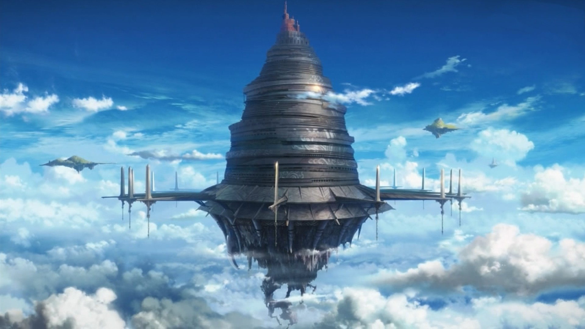
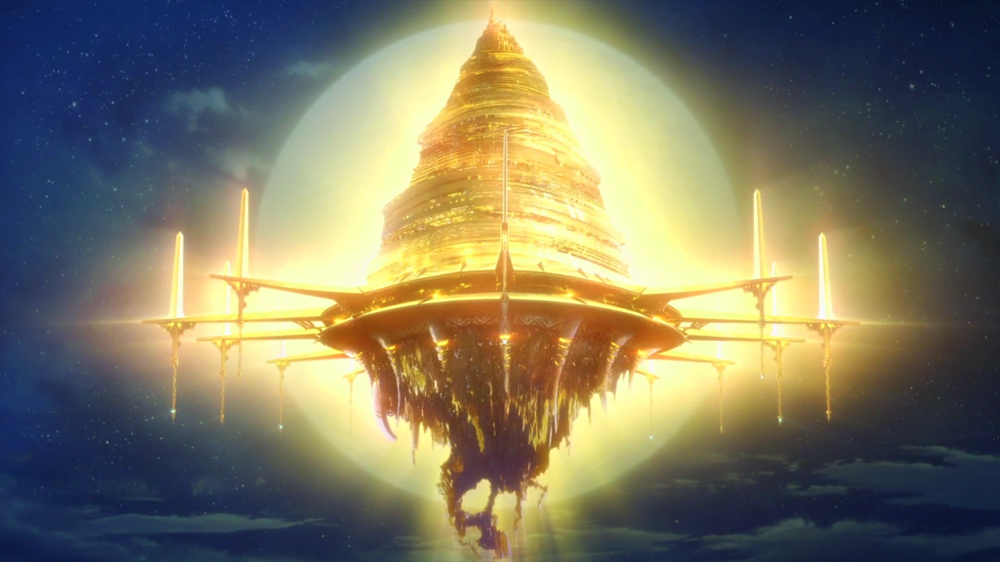
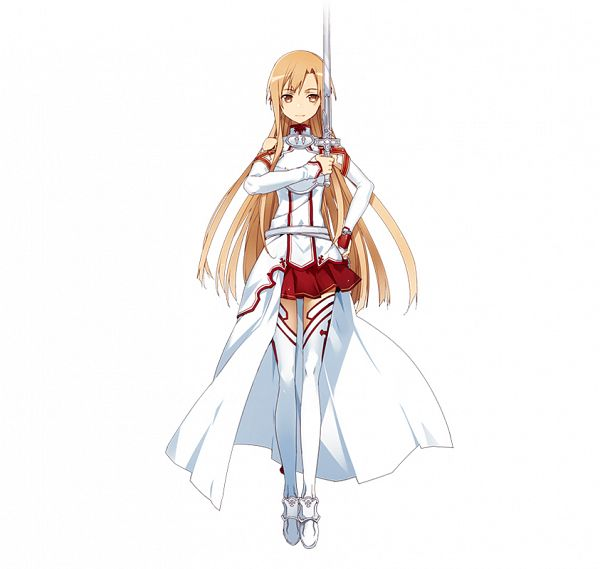
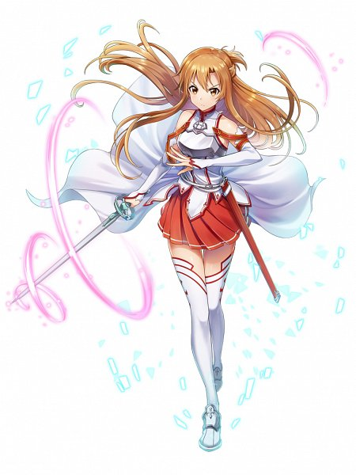
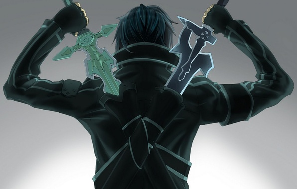
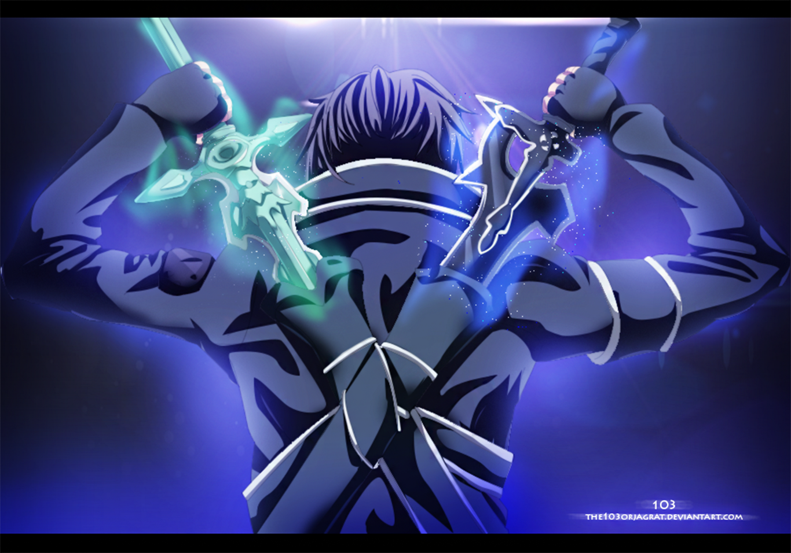
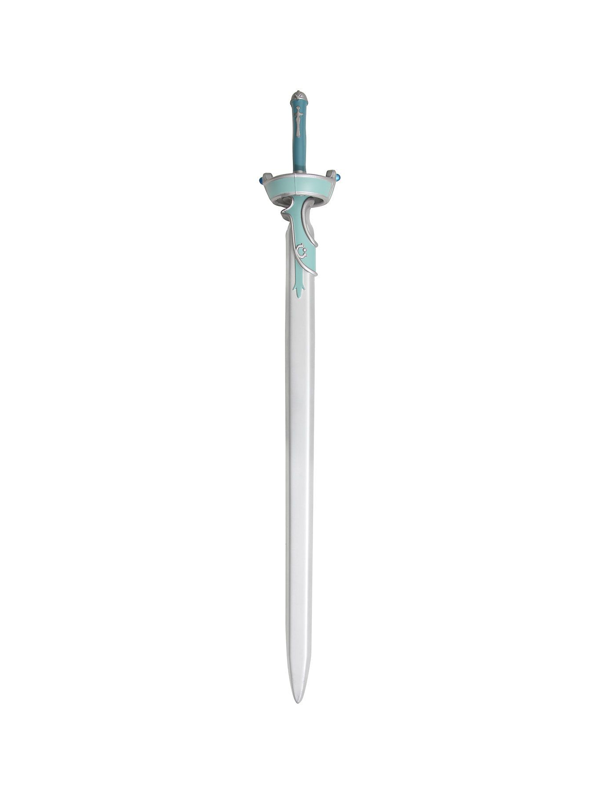
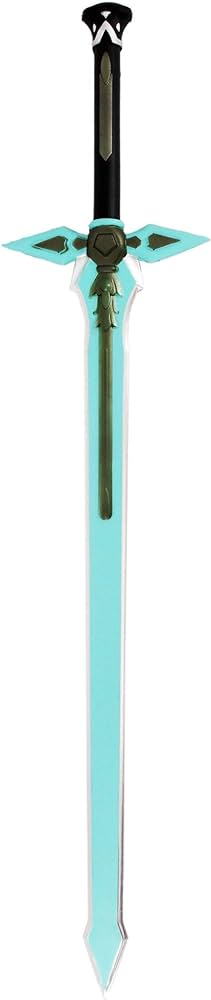

Aincrad


Story Info
In the near future, virtual reality has transcended entertainment, becoming an integral part of everyday life. The advent of the NerveGear, a revolutionary VR device, promises unparalleled immersion, blurring the lines between the physical world and the digital realm.
Enter Kazuto Kirigaya, a young and avid gamer known by his alias, Kirito. With an affinity for virtual worlds, Kirito eagerly embraces the launch of Sword Art Online (SAO), a groundbreaking VRMMORPG promising an unparalleled adventure. As thousands of players log in for the first time, excitement fills the air.
But euphoria soon turns to dread when the creator of SAO, Akihiko Kayaba, reveals a chilling truth: escape from the game is impossible. The NerveGear, now a virtual prison, has been rigged to deliver lethal consequences to any player attempting to disconnect or die in the game.
Trapped within the vast expanse of Aincrad, the floating castle that serves as SAO's setting, Kirito and his fellow players are thrust into a harrowing struggle for survival. With death in the game meaning death in the real world, the stakes couldn't be higher.
As chaos ensues and alliances are forged, Kirito embarks on a perilous journey, determined to unravel the mysteries of SAO and liberate its captive players. Along the way, he encounters a diverse array of companions, each with their own motivations and secrets.
But within the heart of Aincrad, sinister forces lurk, threatening to derail Kirito's quest and plunge the virtual world into darkness. To triumph against the odds, Kirito must hone his skills, forge unbreakable bonds, and confront the demons of his past.
In a world where every battle could be their last, Kirito and his comrades must rise to the challenge, defying fate itself in a bid for freedom. Their journey through Sword Art Online will test their courage, their strength, and their determination to defy destiny and carve their own path to redemption.
Asuna


Asuna (アスナ), her player name in the eponymous video game which the novels are set in. Asuna appears as the lover of Kirito; as well as the female lead, she is in the novels a
sub-leader of the Knights of the Blood Oath (血盟騎士団, Ketsumei Kishidan) guild, notable for being the strongest guild in Aincrad.
Kirito


Kirito, whose real name is Kazuto Kirigaya, is the main protagonist of the anime and light novel series "Sword Art Online" (SAO).
He is a skilled gamer and a central figure within the virtual reality gaming world

Lambent Light
«Lambent Light»
«Lambent Light» (ランベントライト, Ranbento Raito?) was a one-handed rapier owned by Asuna in Sword Art Online (SAO). The rapier was crafted by Lisbeth as a masterpiece of a quality that she could only achieve once every three months. [1] Asuna's rapier, combined with her speed, earned her the nickname «The Flash». The Lambent Light was boosted to +32 by Lisbeth[2] and was Asuna's final weapon in Sword Art Online.

Kirito’s Dark Repulser Sword
«Dark Repulser»
«Dark Repulser» (ダークリパルサー, Dāku Riparusā?) was a one-handed long sword, created by Lisbeth for Kirito out of a Crystallite Ingot, which was obtained from a special quest. Whenever Kirito used the «Dual Blades» skill, he wielded it alongside «Elucidator». This weapon was destroyed during the fight with Heathcliff on the 75th Floor.